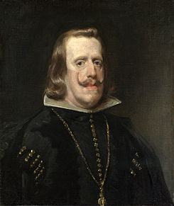

Bienvenido a esta página informativa sobre el rey Felipe IV. En ella podrás conocer la historia de diversas etapas clave de su reinado.

Felipe IV de España, también llamado "el Grande" o "el Rey Planeta" nació en Valladolid el 8 de abril de 1605, y murió en Madrid el 17 de septiembre de 1665.
Fue rey de España desde 1621 hasta su muerte, y rey de Portugal hasta 1640. Su reinado fue el más largo de la dinastía de los Habsburgo o Austrias, y el tercero de la historia de España.
Durante la primera etapa de su reinado, la responsabilidad en los asuntos del Estado corrieron a cargo de Gaspar de Guzmán y Pimentel, más conocido como el Conde-Duque de Olivares. Puedes conocer más acerca de esta etapa haciendo click en su pestaña correspondiente.
Hijo de Felipe III y Margarita de Austria, heredó el trono de su padre a la muerte de este en el año 1621. Reinó durante 44 años y 170 días. Los primeros años de su reinado fueron exitosos, si bien relegó el poder en el ya mencionado Conde-Duque de Olivares, el cual llevó a cabo una ambiciosa política belicista y de reforma en la Monarquía Hispánica con tal de mantener la hegemonía de España en Europa.
Estas actuaciones auguraban la preeminencia universal de la casa de Habsburgo durante mucho tiempo, pero las constantes guerras llevadas a cabo en Europa deterioraron gravemente la Monarquía, llevándola a una ruina y declive inevitables que la obligaron a ceder la hegemonía a la Francia de Luis XIV.
Además, el hijo de Carlos IV, Carlos II, murió sin ningún tipo de descendencia, motivo que desencadenó la Guerra de Sucesión Española.